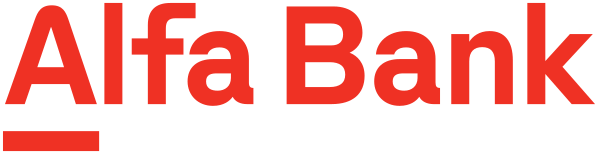

Обо мне
Отвечаю за ключевые сценарии и их метрики в финтехе, iGaming, недвижимости и биотехе — от стартапов до Альфа‑Банка и MAPS.ME. Веду продукт от исследования до релиза: нахожу проблему в данных и интервью, формулирую гипотезы, режу scope до MVP, договариваюсь со стейкхолдерами и довожу до результата. Руководил продуктовой командой из 3 человек, работал с разработкой до 15 человек.

Что делаю: цифровизация аккредитивов — безопасных расчётов крупного бизнеса, в том числе по внешнеторговым контрактам. Провожу UX-исследования с финдиректорами и казначеями клиентов, собираю требования с менеджеров, документарного бизнеса и юристов банка. Перевожу ручные операции в цифровые сценарии интернет-банка, приоритизирую бэклог и веду фичи от гипотезы до релиза.
Что делал: по итогам анализа конкурентов и смежных отраслей инициировал регистрацию через банковский ID — вход «в один клик» для 70% новых пользователей. Провёл 30+ встреч с бизнес-аналитиком, банками и ЦУПИС, выстроил процесс, где команда по каждой фиче согласует гипотезы и метрики успеха. Объединил iOS, Android и веб в единую платформу.
Что получилось: за 3 месяца отток до идентификации ниже в 2,5 раза, конверсия в завершённую регистрацию +48% (+26,7 п. п.), в первое пополнение — +44% (+9,4 п. п.); регистрация занимает меньше 2 минут вместо 3+.
Что делал: discovery — интервью с 12 аналитиками из 5 компаний-клиентов и аудит 150+ отчётов: 64% сессий заканчивались выгрузкой в Excel, треть поисковых запросов — пустой выдачей. За полгода перевёл все три типа отчётов и поиск на новую систему, эффект мерил по продуктовой аналитике до и после релиза.
Что получилось: продажи лицензий +27,5%, непрерывная работа с продуктом — с 27 до 41 минуты, нужный показатель находят в 3 раза быстрее, пустых выдач 9% вместо 38%, SUS с 52 до 81.
Что делал: объединил 5 бизнес-юнитов — поиск, ипотеку, сделку, ремонт и переезд — в мобильную экосистему с кросс-сценариями для роста LTV. Провёл 20+ продуктовых сессий со стейкхолдерами, сократил scope MVP на 35% и разблокировал команду разработки из 15 человек.
Что получилось: MVP за 4 месяца; анкета ипотеки короче на 40% — completion rate +18%; time-to-action −22%; «Сохранённый поиск» — retention +27%; 36 400+ MAU, рейтинг 4,78 в App Store.
Что делал: запустил с нуля криптосервис Parity внутри MAPS.ME — хранение и переводы денег по всему миру: исследовал рынок и конкурентов, запустил бренд, сайт и приложения. Что получилось: рейтинг 4,7 в App Store и 4,4 в Google Play.
Что делал: приоритизировал доработки сайта и приложений второго по величине каршеринга по обращениям в поддержку и UX-тестам. Что получилось: рейтинг 4,6 в App Store и 4,0 в Google Play.
Revo Технологии — сценарии рассрочки на сайтах партнёров; Hyperboloid Agency — стратегия клиентских продуктов; Лига Ставок — мобильное приложение букмекера №1 в России; LEXION development — сайт компании-девелопера